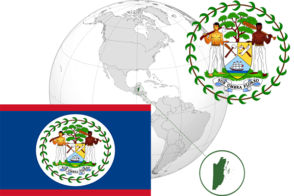

To`liq nomi: Beliz
Region: Markaziy Amerika G`abiy qismi
Qonunchilik shakli: Konstitutsion monarxiya
Mustaqillik kuni: 21-sentabr 1981 - yil Birlashgan Qirollikdan
Poytaxti: Belmopan
Maydoni: 22966 km² (dunyoda 146 -o`rinda )
Chegaradosh davlatlari: Meksika, Gvatemala
Aholisi: 349,369 (dunyoda 179 -o`rinda ) 2015 -yil roʻyxat
Aholi zichligi: 14,1 /km²
Aholining o`rtacha yoshi: 68,3 yil ( 70,2 ayollar, 66,4 erkaklar)
Rasmiy tili: Ingliz tili
Dini: 60% katolik, 30% protestant, 10% mahalliy dinlar
Pul birligi: Beliz dollari
Telefon prefiksi: +501
Internet domen: .bz
Xalqaro tashkilotlarga a`zoligi: BMT (1981 –yildan)
Dengiz va okeanlarga chiqishi: Karib dengizi
YIM: Butun: $ 3,028 mlrd, Jon boshiga: $ 8,321 (2015 - yil roʻyxati)
Yirik shaharlari: Beliz